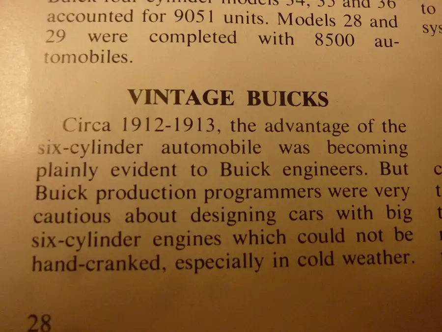

대표 로고대표 브랜드 마크
대표 로고대표 브랜드 마크뷰익 Buick
뷰익(Buick)은 미국 제너럴 모터스의 고급 자동차 브랜드 중 하나다. 미국, 캐나다, 중국, 중화민국, 이스라엘, 멕시코에서 판매되며 캐딜락보다 한 단계 아래의 고급 브랜드로 자리잡았다.
최종 업데이트
뷰익은 어떤 브랜드인가
뷰익은 미국 제너럴 모터스의 고급 자동차 브랜드 중 하나로, 이전 명칭은 Buick Motor Division이다. 미국, 캐나다, 중국, 중화민국, 이스라엘, 멕시코에서 판매되며 중국어 표기는 别克이다.
2004년에 올즈모빌 브랜드가 해체되면서 캐딜락보다 한 단계 아래의 고급 브랜드로 자리잡았다. 북미와 중국에 공장이 있으며 전 차종의 운전석이 좌측에 있다.
북미 시장 외에는 한동안 대한민국이나 유럽 등지에서도 판매했지만 현재는 북미와 중국 시장이 주력이며, 중국 시장의 비중이 상대적으로 큰 편이다. 미국에서는 세단 시장 축소의 여파로 SUV만 판매하고 있으며, 현재 미국에서 생산하는 차종은 SUV인 엔클레이브가 유일하다.
뷰익은 어떻게 시작되고 성장했나
뷰익은 1899년에 David Dunbar Buick이 설립한 브랜드이다. 본사는 디트로이트에 있으며, 모기업은 제너럴 모터스이다.
이전 명칭은 Buick Motor Division이다. 2004년에 올즈모빌 브랜드가 해체되면서 캐딜락보다 한 단계 아래의 고급 브랜드로 자리잡았다.
뷰익의 브랜드 아이덴티티는 무엇인가
제너럴 모터스의 고급 브랜드 가운데 캐딜락보다 한 단계 아래에 놓이며, 북미와 중국을 주력 시장으로 삼아 중국 비중이 큰 브랜드이다.
뷰익의 대표 제품과 서비스는 무엇인가
미국에서 생산하는 차종은 SUV인 엔클레이브가 유일하며, 미국에서는 SUV만 판매한다. 대부분의 국가에서 세단 시장이 축소되면서 세단 모델은 중국 현지 전략형으로 변경되었고, SUV도 중국 전략형 모델이 별도로 있다.
대한민국에서는 대우자동차를 통해 파크애비뉴가 수입되어 판매된 적이 있고, 2010년부터 2016년까지 준대형 세단 라크로스가 알페온이라는 이름으로 한국지엠 부평2공장에서 생산되어 판매되었다. 한국지엠 창원공장에서는 앙코르, 부평공장에서는 엔비스타 등의 소형 SUV를 생산하여 수출하고 있다.
뷰익은 지금 어떤 상태인가
현재 북미와 중국 시장이 주력이며 중국 시장의 비중이 상대적으로 큰 편이다. 대한민국에서는 1997년에 수입이 중단되었으나, 2026년 9월 30일에 중국 현지 전략형 PHEV인 엘렉트라 E7을 출시하며 재진출했다.
모기업은 제너럴 모터스이다.
뷰익 로고는 어떻게 변해왔나
대표 로고대표 브랜드 마크사진으로 보는 뷰익의 역사

자주 묻는 질문
뷰익는 어느 나라 브랜드인가요?
뷰익는 미국의 모빌리티 브랜드입니다.
뷰익는 언제 설립되었나요?
뷰익는 1899년 설립되었습니다.
뷰익의 브랜드 아이덴티티는 무엇인가요?
제너럴 모터스의 고급 브랜드 가운데 캐딜락보다
뷰익의 대표 제품은 무엇인가요?
미국에서 생산하는 차종은 SUV인 엔클레이브가 유일하며, 미국에서는 SUV만 판매한다.
뷰익는 현재 어떤 상태인가요?
현재 북미와 중국 시장이 주력이며 중국 시장의 비중이 상대적으로 큰 편이다.
뷰익의 창업자는 누구인가요?
뷰익의 창업자는 David Dunbar Buick입니다(위키데이터 기준).
뷰익의 본사는 어디에 있나요?
뷰익의 본사는 디트로이트에 있습니다(위키데이터 기준).
출처와 검증
뷰익 관련 참고: 공식 웹사이트 · 위키데이터 Q27415 · 한국어 위키백과 · 영어 위키백과. 브랜드명은 한글과 원어를 함께 표기하되 데이터에 없는 표기는 만들지 않습니다. 기원 국가·설립연도는 검수된 정의문에서 확인된 값을 우선하고, 없을 때만 공식 웹사이트 URL이 일치하는 위키데이터 개체의 값을 씁니다. 탄생일의 월·일은 위키데이터, 위키백과 정보상자, 본문 가운데 같은 연월로 확인되는 값만 싣고, 출처끼리 다르면 싣지 않습니다. 위키데이터 값은 2026-11-11 기준입니다.